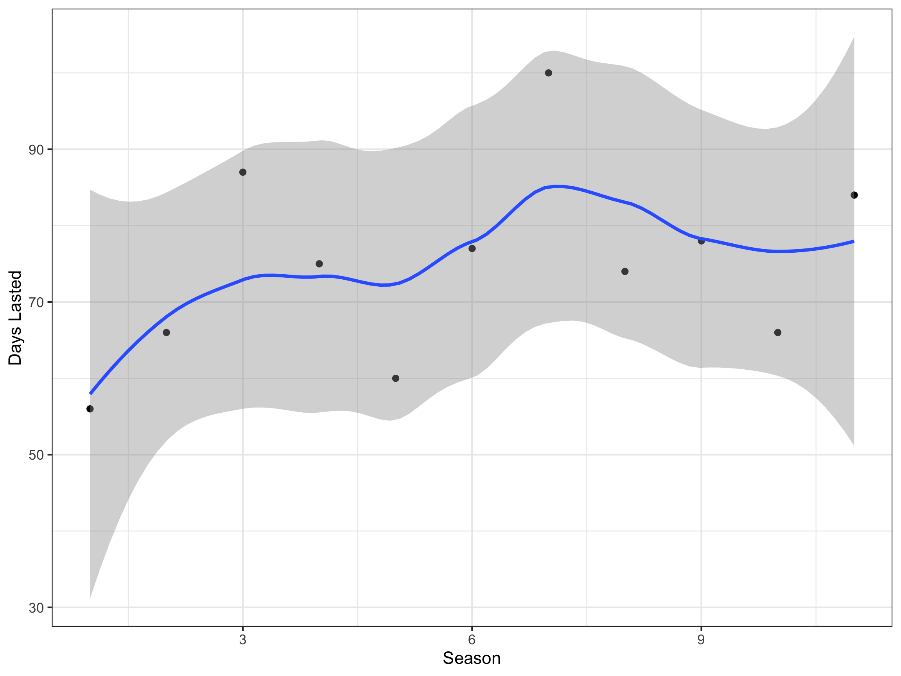
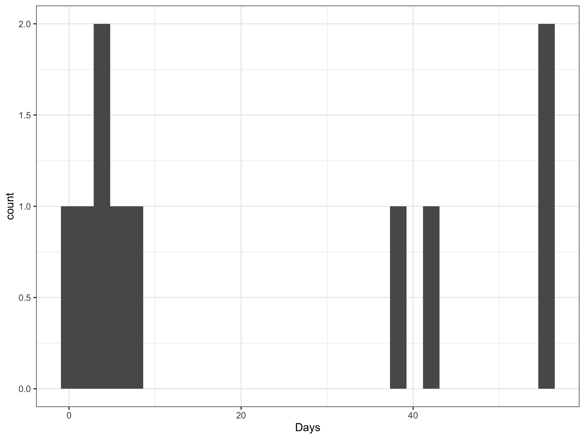
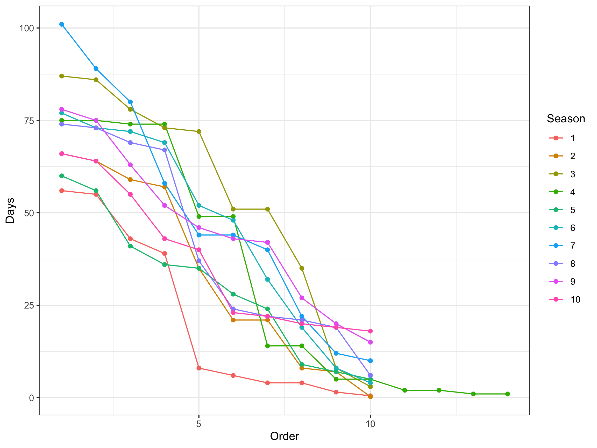

library(tidyverse)
library(rvest)
alone_url <- "https://en.wikipedia.org/wiki/Alone_(TV_series)"
alone_web_data <- read_html(alone_url) Tutorial 10 Solutions
Exercise 1
Visit the wikipedia page for the Alone TV Series and identify the basic elements that make up the page.
- How many tables are on there on the page?
alone_tables <- alone_web_data |>
html_elements("table")
num_tables = length(alone_tables)On the webpage there are 5 tables.
- How many paragraphs are there?
alone_paragraphs <- alone_web_data |>
html_elements("p")
num_paras = length(alone_paragraphs)On the webpage there are 22 tables.
- Identify and scrape the table containing the past series winners.
table_series_winners = alone_tables |>
purrr::pluck(2) |>
html_table(header = TRUE)
table_series_winners # A tibble: 13 × 10
Season Subtitle Location Episodes Episodes `Originally released`
<chr> <chr> <chr> <chr> <chr> <chr>
1 Season Subtitle Location Episodes Episodes First released
2 1 — Port Ha… 11 11 June 18, 2015 (2015-…
3 2 — Port Ha… 15 15 April 21, 2016 (2016…
4 3 — Patagon… 12 12 December 8, 2016 (20…
5 4 Lost & Found Quatsin… 12 12 June 15, 2017 (2017-…
6 5 Redemption Selenge… 12 12 June 14, 2018 (2018-…
7 6 The Arctic Great S… 11 11 June 6, 2019 (2019-0…
8 7 Million Dollar Cha… Great S… 11 11 June 11, 2020 (2020-…
9 8 Grizzly Mountain Chilko … 11 11 June 3, 2021 (2021-0…
10 9 Polar Bear Island Nunatsi… 11 11 May 26, 2022 (2022-0…
11 10 Predator Lake Reindee… 11 11 June 8, 2023 (2023-0…
12 11 Arctic Circle Inuvik,… 12 12 June 13, 2024 (2024-…
13 Specials — — 8 8 April 14, 2016 (2016…
# ℹ 4 more variables: `Originally released` <chr>, `Days Lasted` <chr>,
# `Winner(s)` <chr>, `Runner(s)-up` <chr>- Identify and scrape the text that was used to create the Background text for this tutorial.
para_2 = alone_paragraphs |>
purrr::pluck(2) |>
html_text()
para_2[1] "Alone is an American survival competition series on History, formerly the History Channel. It follows the self-documented daily struggles of 10 individuals (seven paired teams in season 4) as they survive alone in the wilderness for as long as possible using a limited amount of survival equipment. With the exception of medical check-ins, the participants are isolated from each other and all other humans. They may withdraw from the competition (\"tap out\") at any time, or be removed due to failing a medical check-in. The contestant who remains the longest wins a grand prize of $500,000 (USD) (increased to $1 million for season 7). The seasons have been filmed across a range of remote locations, usually on first nations-controlled lands, including northern Vancouver Island, British Columbia, Nahuel Huapi National Park in Argentina, Patagonia, Northern Mongolia, Great Slave Lake in the Northwest Territories, and Chilko Lake in interior British Columbia.\n"If you want to get the extact text featured on the tutorial background, you’ll need some string handling.
bkgd_str_end = str_locate(para_2, "season 7\\)\\.")[2]
background_text = str_sub(para_2, 1, bkgd_str_end)Exercise 2
Explore the data you’ve pulled down from the webpage.
- Process the table and extract how long the winners spent in the Wild on each season.
# Remove the duplicate row
table_series_winners = table_series_winners[-1, ]
time_in_wild = table_series_winners |>
select(Season, `Days Lasted`) |>
mutate(`Days Lasted` = as.numeric(`Days Lasted`),
Season = as.numeric(Season)) |>
filter(Season != "Specials")- Plot your result. Is the time spent in the wild increasing as the seasons go on?
ggplot(time_in_wild, aes(x = Season, y = `Days Lasted`)) +
geom_point() +
geom_smooth() +
theme_bw()
There is no clear trend that the number of days in the wild is increasing with the number of seasons.
This result is interesting as one might expect (i) participants to learn from each other as the show goes on and (ii) that the pool of skilled candidates would increase with show popularity. Both of which would increase time in the wild. It seems these factors do not matter relative to the difficulty of surviving in the wild.
Note there is also a confounding variable here of location. Different locations increase the difficulty of surviving in the wild.
In your own time: Exercise 3
Start by looking at the different season websites, their web address and how the website is structured. Look for common elements and any edge case exceptions that may create challenges when writing code.
It appears that there is table under a header called Results, that stores all the data about the contestants. In this table there is a column containing the number of days in the wild.
- Write some pseudo code and identify potential edge cases that would need to be handled to web scrape the time contestants spent in the wild from Seasons 1 - 10.
- Generalise the url string for each season so we can pull the data into R
- Create code to get the table from the web page
- Create a new column in that table that has numeric entries for days lasted
- Combine the tables for each seasons data together
- Wrangle table into a format for plotting / analysis
- Identify potential edge cases that would need to be handled to web scrape the time contestants spent in the wild from Seasons 1 - 10.
We’ll need to be careful, entries in the column are not numeric, eg. 56 days. To get the number from this string we will need string handling. We will also need to be careful of whether the time in the wild was days or hours. There is also a season where people competed in pairs.
- Pull this data into R and plot how long contestants were in the wild on season one.
season_url = "https://en.wikipedia.org/wiki/Alone_season_1"
season_data = read_html(season_url)
table_ref = ".wikitable"
table_data_raw = season_data |>
html_nodes(table_ref) |>
html_table(header = TRUE) |>
pluck(2)
table_data = table_data_raw |>
mutate(Days = as.numeric(str_match(Status, "[:digit:]+"))) |>
mutate(Days = if_else(str_detect(Status, "[Hh]ours"), Days/24, Days))
ggplot(table_data, aes(x = Days)) +
geom_histogram() +
theme_bw()
- ADVANCED generalise your approach to all seasons.
Step 1: Generalise the url string
season_number = 1
season_url_start = "https://en.wikipedia.org/wiki/Alone_season_"
season_url = paste(season_url_start, season_number, sep = "")
season_data = read_html(season_url)Step 2: Get code to pull the table from the website
table_ref = ".wikitable"
table_data_raw = season_data |>
html_nodes(table_ref) |> #xpath = table_xpath
html_table(header = TRUE) |>
purrr::pluck(2)
# This is not robust coding - could easily break
# Ideally one should look for the results header in the html and find the next tableStep 3: Create a new column for days lasted
# Get season table
table_data = table_data_raw |>
mutate(Days = as.numeric(str_match(Status, "[:digit:]+"))) |>
mutate(Days = if_else(str_detect(Status, "[Hh]ours"), Days/24, Days))Step 4a: Combine the tables together
# Combine the above code into one function we can use to run the code for the
#different seasons
Wrapper_function <- function(season_number){
season_url_start = "https://en.wikipedia.org/wiki/Alone_season_"
season_url = paste(season_url_start, season_number, sep = "")
season_data = read_html(season_url)
table_ref = ".wikitable"
table_data_raw = season_data |>
html_nodes(table_ref) |> #xpath = table_xpath
html_table(header = TRUE) |>
purrr::pluck(2)
table_data <- table_data_raw |>
mutate(Days = as.numeric(str_match(Status, "[:digit:]+"))) |>
mutate(Days = if_else(str_detect(Status, "[Hh]ours"), Days/24, Days))
return(table_data)
}
# Run the code for each season
num_seasons = 10
season_table_list = vector("list", num_seasons)
for(i in 1:num_seasons){
print(paste("Season", i))
season_table_list[[i]] = Wrapper_function(season_number = i) |>
mutate(Season = i) |> # add a season reference
mutate(Order = row_number()) # add a row reference
}[1] "Season 1"
[1] "Season 2"
[1] "Season 3"
[1] "Season 4"
[1] "Season 5"
[1] "Season 6"
[1] "Season 7"
[1] "Season 8"
[1] "Season 9"
[1] "Season 10"Step 5: Wrangle and extract the data from the tables for plotting
# Combine the data together into a single tidy data frame
season_table_combined = bind_rows(season_table_list) |>
mutate(Season = as.factor(Season))
# Example plot - Spaghetti
ggplot(season_table_combined) +
geom_line(aes(x = Order, y = Days,
col = Season, group = Season)) +
geom_point(aes(x = Order, y = Days,
col = Season, group = Season)) +
theme_bw()
We see there is one season that has a different number of contestants than another. Closer inspection reveals this season the contestants competed in pairs. We would need to handle this season as a different case.
From the plot we observe the Season 1 contestants went home earlier compared with other seasons. We also observe that in the later seasons the first contestants last longer compared with the earlier seasons.
- ADVANCED The reasons people leave the show can be quite varied, from medical reasons, to fear, accidents and to missing family. Is there any easy way to scrape and analyse the common reasons people leave? Discuss the challenges.
No, there is no easy way to do this. One approach might be to perform a text analysis on the reasons people leave looking for common words / categories. You could also define these categories manually. Then you could perform a “fuzzy” matching, which is a partial string matching to see which reasons people leave best match the main categories. Grouping any niche reasons into an other category.